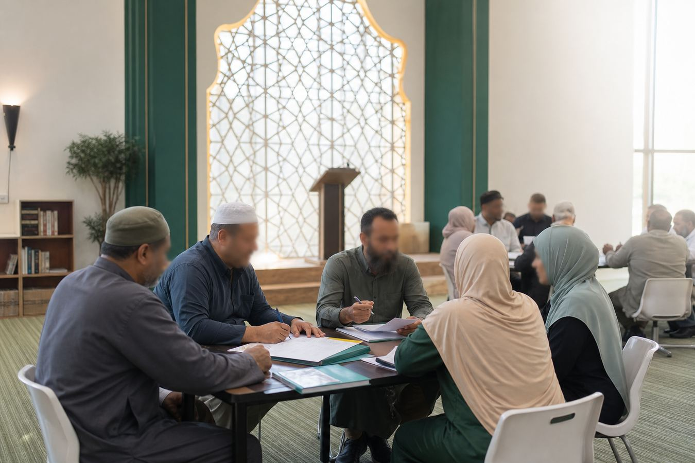

Berpaksikan amanah
Bahasa, cadangan dan dokumen dibina dengan hormat kepada autoriti agama, budaya institusi dan realiti komuniti.
Khidmat nasihat institusi Islam
Insan Institute membantu institusi Islam membina sistem pengurusan yang lebih kemas, membangunkan personel berkemahiran, dan menyediakan laluan praktikal untuk pembangunan kompetensi berasaskan TVET/NOSS.
Kedudukan kami
Kami menyokong Pejabat Agama, MAIN, JAIN, masjid dan institusi tahfiz melalui kajian awal, pemetaan kompetensi, khidmat nasihat, dokumentasi, penilaian kesediaan institusi dan penyelarasan pelaksanaan projek rintis.
Tentang Insan Institute
Insan Institute ialah sebuah konsultansi pembangunan institusi Islam yang memberi tumpuan kepada pengurusan masjid, pengurusan tahfiz, tadbir urus, pembangunan SOP, pembinaan kapasiti dan laluan pembangunan kompetensi.
Pendekatan kami menggabungkan kefahaman medan institusi Islam dengan kaedah pengurusan moden: mendengar realiti operasi, memetakan keperluan sebenar, menyusun dokumen kerja, dan membantu pasukan bergerak daripada idea kepada pelaksanaan.
Bahasa, cadangan dan dokumen dibina dengan hormat kepada autoriti agama, budaya institusi dan realiti komuniti.
Setiap cadangan diterjemah kepada langkah kerja, dokumen, peranan dan ukuran kesediaan yang jelas.
Kerja TVET/NOSS difokuskan kepada nasihat, pemetaan, dokumentasi dan koordinasi dengan pihak berautoriti apabila diperlukan.
Apa yang kami lakukan
Fokus ini membantu organisasi bergerak daripada operasi harian yang bergantung kepada individu kepada sistem yang lebih tersusun, boleh dilatih dan boleh diwariskan.
Sistem tadbir urus, SOP operasi, pembangunan jawatankuasa, data komuniti, peranan petugas dan hala tuju program masjid.
Teroka fokus masjidKesediaan institusi, dokumentasi akademik dan operasi, struktur pentadbiran, keselamatan, kualiti pembelajaran dan pembangunan tenaga kerja.
Teroka fokus tahfizPemetaan kompetensi kerja, readiness assessment, dokumentasi sokongan dan penyelarasan laluan bersama rakan bertauliah jika berkaitan.
Teroka TVET/NOSSMengapa ini penting
Masjid dan tahfiz memikul amanah pendidikan, dakwah, kebajikan dan pembangunan komuniti.
Apabila peranan, SOP, data, latihan dan dokumen institusi disusun, kerja harian menjadi lebih jelas dan lebih mudah dipertingkat.
Pemetaan kompetensi membantu institusi mengenal pasti kemahiran sebenar yang diperlukan, bukan sekadar senarai tugas.
Pendekatan nasihat
Temu bual, semakan dokumen, pemerhatian operasi dan pemetaan pihak berkepentingan.
Kenal pasti jurang tadbir urus, SOP, personel, data, latihan dan dokumentasi.
Terjemah fungsi kerja masjid dan tahfiz kepada kecekapan, bukti kerja dan keperluan latihan.
Sediakan roadmap, bengkel, dokumen kerja dan koordinasi projek rintis yang terkawal.

Pengurusan Masjid
Kami membantu masjid menyusun fungsi pentadbiran, operasi, data komuniti, pembangunan jawatankuasa dan perancangan program supaya perkhidmatan kepada jemaah lebih konsisten.
Pengurusan Tahfiz
Institusi tahfiz memerlukan sistem yang menjaga kualiti hafazan, keselamatan, rekod pelajar, pembangunan guru dan pentadbiran harian secara berhemah.
Pemetaan Kompetensi TVET/NOSS
Insan Institute menyediakan khidmat nasihat, pemetaan kompetensi, readiness assessment, sokongan dokumentasi dan koordinasi pelaksanaan bagi membantu institusi memahami kesesuaian laluan TVET/NOSS.
Nota pematuhan: Insan Institute tidak membuat tuntutan sebagai pusat bertauliah JPK dan tidak mengeluarkan SKM, DKM atau DLKM. Sebarang laluan persijilan hendaklah melalui pihak berautoriti atau rakan yang bertauliah, jika berkaitan.
Program & khidmat nasihat
Setiap modul boleh dijalankan sebagai bengkel pendek, kajian awal, projek rintis atau sebahagian daripada pelan pembangunan institusi yang lebih menyeluruh.
Semakan awal keupayaan operasi, dokumentasi, tadbir urus dan personel.
Kerangka kemahiran untuk petugas masjid, guru tahfiz, warden dan pentadbir.
Panduan kesesuaian laluan, dokumen dan penyelarasan bersama pihak berkaitan.
Dokumen kerja untuk operasi harian, rekod, pelaporan dan kawalan kualiti.
Skop pilot, objektif, jadual, peranan, data asas dan ukuran hasil.
Temu bual, borang, dapatan ringkas dan cadangan tindakan.
Latihan praktikal untuk pengurusan, dokumentasi, komunikasi dan pelaksanaan.
Pelan berfasa untuk program institusi, daerah atau negeri.
Projek rintis / readiness assessment
Untuk institusi peringkat awal, kami mencadangkan satu penilaian kesediaan sebagai titik mula. Hasilnya ialah ringkasan jurang, cadangan keutamaan dan roadmap pelaksanaan yang boleh dibincangkan dengan pihak pengurusan.
Bincang projek rintisRakan sasaran
Hubungi kami
Kongsikan konteks institusi, cabaran utama dan jenis sokongan yang diperlukan. Kami akan mencadangkan langkah awal yang sesuai.
Ganti maklumat ini dengan nombor telefon, WhatsApp, alamat dan pendaftaran rasmi apabila tersedia.